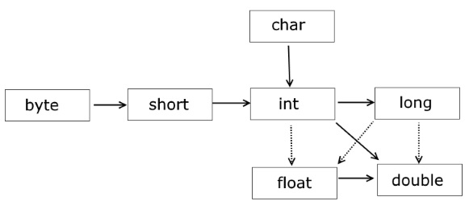

Два основных типа: примитивы и ссылочные
| Object | Number | Numeric types |
| Byte | ||
| Short | ||
| Long | ||
| Integer | ||
| Floating-Point Types | ||
| Double | ||
| Float | ||
| Character | ||
| Boolean |
Инициализация:
Числа 0 или 0.0
boolean = false
Объекты (в том числе Sting) = null
| Тип | Умолчание | Память | Допустимо |
|---|---|---|---|
| Целочисленные типы | |||
| byte | 0 | 8 бит | от -128 до 127 |
| short | 0 | 16 бит | от -32_768 до 32_767 |
| char | '\u0000' | 16 бит | от 0 до 65_536 беззнаковое целое число, представляющее собой символ UTF-16 (буквы и цифры) |
| int | 0 | 32 бита | от -2_147_483_648 до 2_147_483_647 |
| long | 0L | 64 бита | от -9_223_372_036_854_775_808L до 9_223_372_036_854_775_807L |
| Типы с плавающей точкой | |||
| float | 0.0f | 32 бита | от 1.4e-45f до 3.4e+38f |
| double | 0.0d | 64 бита | от 4.9e-324 до 1.7e+308 |
| Логический тип | |||
| boolean | false | 8 бит (в массивах) 32 бит (не в массивах - int) |
true (истина) или false (ложь) |
Значение примитива становится объектом, чтобы выполнять различные операции ( .parseInt()).
Примитивы не имеют методов.
Объекты классов-оберток являются неизменяемыми (Immutable).
Для присваивания ссылок-примитивов объектам их классов-оберток (и наоборот) не требуется ничего делать, все происходит автоматически
int x = 7;
Integer y = 111;
x = y; // автораспаковка
y = x * 123; // автоупаковка
Автоупаковка и распаковка не работают для массивов.
Автоупаковка - это механизм неявной инициализации объектов классов-оберток (Byte, Short, Integer, Long, Float, Double, Character, Boolean) значениями соответствующих им исходных примитивных типов (byte, short, int...), без явного использования конструктора класса.
Автоупаковка происходит при прямом присваивании примитива классу-обертке (с помощью оператора =), либо при передаче примитива в параметры метода (типа класса-обертки).
Автоупаковке в классы-обертки могут быть подвергнуты как переменные примитивных типов, так и константы времени компиляции (литералы и final-примитивы). При этом литералы должны быть синтаксически корректными для инициализации переменной исходного примитивного типа.
Автоупаковка переменных примитивных типов требует точного соответствия типа исходного примитива типу класса-обертки.
Например, попытка упаковать переменную типа byte в Short, без предварительного явного приведения byte в short вызовет ошибку компиляции.
Автоупаковка констант примитивных типов допускает более широкие границы соответствия.
В этом случае компилятор способен предварительно осуществлять неявное расширение/сужение типа примитивов.
Неявное расширение/сужение исходного типа примитива до типа примитива соответствующего классу-обертке (для преобразования int в Byte, сначала компилятор самостоятельно неявно сужает int к byte) автоупаковку примитива в соответствующий класс-обертку.
Однако, в этом случае существуют два дополнительных ограничения:
a) присвоение примитива обертке может производится только оператором = (нельзя передать такой примитив в параметры метода без явного приведения типов)
b) тип левого операнда не должен быть старше чем Character, тип правого не должен старше, чем int.
Допустимо расширение/сужение byte в/из short, byte в/из char, short в/из char и только сужение byte из int, short из int, char из int. Все остальные варианты требуют явного приведения типов.
Дополнительной особенностью целочисленных классов-оберток созданных автоупаковкой констант в диапазоне -128 ... +127 является то, что они кэшируются JVM. Поэтому такие обертки с одинаковыми значениями будут являться ссылками на один объект.
Каждое выражение и каждая переменная имеет строго определенный тип уже на момент компиляции. Механизм приведения типов (casting) - способ преобразования значения переменной одного типа в значение другого типа:
Неявные – выполняются автоматически (расширяющие преобразования, сужающие с потерей данных: int->float, long->float, long->double).
Явные – надо указывать тип (сужающие преобразования от типа с большей разрядностью к типу с меньшей разрядностью). Потеря данных (старшие биты будут потеряны).
| ↓ИЗ | В→ | boolean | byte | short | char | int | long | float | double |
|---|---|---|---|---|---|---|---|---|
| boolean | - | N | N | N | N | N | N | N |
| byte | N | - | Y | C | Y | Y | Y | Y |
| short | N | C | - | C | Y | Y | Y | Y |
| char | N | C | C | - | Y | Y | Y | Y |
| int | N | C | C | C | - | Y | Y* | Y |
| long | N | C | C | C | C | - | Y* | Y* |
| float | N | C | C | C | C | C | - | Y |
| double | N | C | C | C | C | C | C | - |
N - невозможно
Y - автоматически
C - сужающее преобразование, требующее явного приведения
Y* - автоматическое расширяющее преобразование, в процессе которого значение может потерять некоторые из наименее значимых разрядов
Расширение (повышение, upcasting) примитивного типа (widening primitive) - Означает, что осуществляется переход от менее емкого типа к более ёмкому. Этот тип приведения всегда допустим и происходит автоматически.
Например, от типа byte (длина 8 бит) к типу int (длина 32 бита). Такие преобразование безопасны в том смысле, что новый тип всегда гарантировано вмещает в себя все данные, которые хранились в старом типе и таким образом не происходит потери данных.
Сужение (понижение, downcasting) примитивного типа (narrowing primitive) - Означает, что переход осуществляется от более емкого типа к менее емкому. При таком преобразовании есть риск потерять данные.
В Java такое преобразование должно совершаться явным образом, при этом все старшие биты, не умещающиеся в новом типе, просто отбрасываются - никакого округления или других действий для получения более корректного результата не производится.
Например, если число типа int было больше 127, то при приведении его к byte значения битов старше восьмого будут потеряны.
Сужение объектного типа (narrowing reference) - Означает нисходящее приведение, то есть приведение от предка к потомку (подтипу). Возможно только если исходная переменная является подтипом приводимого типа.
Требует явного указания типа. При несоответствии типов в момент выполнения выбрасывается исключение ClassCastException.
При приведении ссылочных типов с самим объектом ничего не происходит, меняется лишь тип ссылки, через которую происходит обращение к объекту.
Для проверки возможности приведения нужно воспользоваться оператором instanceof:
Parent parent = new Child();
if (parent instanceof Child) {
Child child = (Child) parent;
}
Для более эффективного использования памяти, в JAVA используются так называемые пулы.
Есть строковый пул, Integer pool и тд. Когда мы создаем объект не используя операцию new, объект помещается в пул, и в последствии, если мы захотим создать такой же объект (опять не используя new), новый объект создан не будет, а мы просто получим ссылку на наш объект из пула.
Особенность Integer-пула — он хранит только числа, которые помещаются в тип данных byte: от -128 до 127. Для остальных чисел пул не работает.
Integer i1 = 127;
Integer i2 = 127;
Integer i3 = 128;
Integer i4 = 128;
System.out.println(i1==i2); //true
System.out.println(i3==i4); //false
Это неизменяемый (immutable) (не меняется после создания) и финализированный (без потомков) тип данных; потокобезопасный может использоваться в многопоточке
Каждый объект можно привести к строке .toString
Пул строк – это набор строк хранящийся в Heap .
Пул строк возможен благодаря неизменяемости строк в Java и реализации идеи интернирования строк;
Интернирование строк — это механизм, при котором одинаковые литералы представляют собой один объект в памяти.
Пул строк помогает экономить память, но по этой же причине создание строки занимает больше времени;
Когда для создания строки используются ", то сначала ищется строка в пуле с таким же значением, если находится, то просто возвращается ссылка, иначе создается новая строка в пуле, а затем возвращается ссылка на неё;
При использовании оператора new создается новый объект String. Затем при помощи метода intern() эту строку можно поместить в пул или же получить из пула ссылку на другой объект String с таким же значением;
String q = "I'm";
String w = "I'm";
String r = new String("I'm");
String t = r.intern();
System.out.println("q==w: " + (q==w)); //true
System.out.println("q==r: " + (q==r)); //false
System.out.println("q==t: " + (q==t)); //true
Пул строк является примером паттерна «Приспособленец» (Flyweight).
Класс StringString является неизменяемым (immutable) - модифицировать объект такого класса нельзя, можно лишь заменить его созданием нового экземпляра.
Класс StringBuffer изменяемый - использовать StringBuffer следует тогда, когда необходимо часто модифицировать содержимое. Потокобезопасный. Синхронизированные методы работают медленнее не сихнронизированных.
Класс StringBuilder был добавлен в Java 5 и он во всем идентичен классу StringBuffer за исключением того, что он не синхронизирован и поэтому его методы выполняются значительно быстрей.
Класс StringJoiner используется, чтобы создать последовательность строк, разделенных разделителем с возможностью присоединить к полученной строке префикс и суффикс:
StringJoiner joiner = new StringJoiner(".", "prefix-", "-suffix");
for (String s : "Hello the brave world".split(" ")) {
joiner.add(s);
}
System.out.println(joiner); //prefix-Hello.the.brave.world-suffix
Сигнатура - название метода и типы параметров в определенном порядке
Контракт метода - эксепшены.
Java передает параметры по значению. Всегда.
int х = 3;
int у = х;
Скопировать значение внутри х и записать эту копию в у.
Cat A = new Cat ();
Cat B = A;
Ссылка А копируется в ссылку B. К объекту это не относится — у нас по-прежнему всего один объект. Но теперь есть две различных ссылки, контролирующие один и тот же объект Cat.